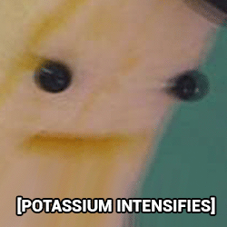

FINSCAR: An' this be payback fer me doubloons!
==>
>
==>
Wed Jun 28 2023 04:00:52 GMT+1000
!!Warning, Author Commentary may contain spoilers!!
Comments are occasionally posted on pages in MSPFA by users. These are archived from the
original pages
as-is. Oldest comment first.
|
ONGG
Oooof, that's gotta hurt |

|
aquaticFoxfire
Jun 28 2023 04:08:17 |
|  |
Potassium Guy
So do horns not have any blood flow? |

|
CeruleanSnake
Potassium Guy, This was a tough thing actually. Naturally, horns do have a bone anchor and blood at the base, but we only see one troll with actual broken horns being Equius. Of course there no actual explanation as to how and why and nothings noted if they grow back (unlike teeth). The one time we DO see anatomy of a troll deeper than skin is when Damara tries to electrocute herself and shows the horns to not even be attached at the bone at all, just little pockets where they would be so I decided to take a little artistic liberty. Who knows, maybe only base is supplied with blood and troll horns just break off easy as a survival mechanic? |
Page: 266